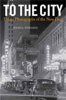

New Deal photographs reveal the inexorable "pull of the city" even as they lament the demise of rural America
New Deal photographs reveal the inexorable "pull of the city" even as they lament the demise of rural America


 New Deal photographs reveal the inexorable "pull of the city" even as they lament the demise of rural America
New Deal photographs reveal the inexorable "pull of the city" even as they lament the demise of rural America

|  |
To the CityUrban Photographs of the New DealJulia L. Foulkespaper EAN: 978-1-59213-998-9 (ISBN: 1-59213-998-1) |
"With an expert eye for historical significance and visual form, Julia Foulkes has mined the great photographic file of the Farm Security Administration for signs of the changing city in the New Deal era. The result is a book of stunning photographs and incisive commentary that together confirm the richness of the collection as a resource of public memory. Foulkes has assembled an invaluable collection of images that capture a key moment in the origins of the national urban society of our own times."
—Alan Trachtenberg, Yale University
In the 1930s and 1940s, as the United States moved from a rural to an urban nation, the pull of the city was irrepressible. It was so strong that even a photographic mission designed to record the essence of rural America could not help but capture the energy of urbanization too. To the City showcases over 100 photographs from the Farm Security Administration (FSA) project along with extracts from the Works Progress Administration (WPA) guidebooks and oral histories, to convey the detail and dimensions of that transformation.
This artfully grouped collection of photographs includes magnificent images by notable photographers Dorothea Lange, Walker Evans and Gordon Parks, among many others. Foulkes organizes this history of Americana into five themes: Intersection; Traffic; High Life and Low Life; The City in the Country; and Citizens to illuminate the changes in habits, landscapes, and aspirations that the march to cities encompassed.
As the rural past holds symbolic sway and the suburb presents demographic force, the urban portion of our history—why and how cities have been a destination for hope—recedes from view. To the City is a thoughtful, engaging reminder.
Excerpt available at www.temple.edu/tempress
"Julia Foulkes’s To the City is a welcome corrective to the common view that FSA-WPA photographers were concerned only with documenting rural life in the 1930s and 1940s. The ‘propulsion to the city,’ as she calls it, was an equally important theme in their work. Photographers were participants in an urban migration that was as much a shift in the locus of the American imagination as it was a movement of Americans themselves. Their images of roads, street corners, dance halls, and parades document places and social facts, but they also reveal the connective cultural tissue of a country energized by the allure and terror of urban living."
—Casey Nelson Blake, Columbia University
"Nicely-presented, thoughtfully-written, well-argued, and sufficiently-documented, this easy-to-read, engaging book, consisting mostly of photographs...will be of significant interest to general readers, students, scholars, and others."
— Art Book Review
"This book is fun, To the City is a book that readers... will likely find fascinating. Looking through these images, for example, could help students understand the context for postwar impulses toward urban renewal and suburban life—not to mention the importance of written communication to link city people together (all those pictures of newsstands, business signage, billboards, poster-plastered walls, and movie theater marquees). Give it a look."
—Journal of Urban Affairs
"As a collection of photographs To the City comprises a useful complement to the many anthologies emphasizing the FSA’s rural pictures."
—American Studies
List of Illustrations
Acknowledgments
Introduction
1. Intersection
Photo Gallery
2. Traffic
Photo Gallery
3. High Life and Low Life
Photo Gallery
4. The City in the Country
Photo Gallery
5. Citizens
Photo Gallery
Notes
Index
Julia L. Foulkes is an Associate Professor of History at The New School and the author of Modern Bodies: Dance and American Modernism from Martha Graham to Alvin Ailey. With an interest in the broad impact of the arts, she has served as an advisor for the PBS documentary Free to Dance and various arts organizations, and edited a journal volume on "The Arts in Place."
History
Urban Studies
Art and Photography
Urban Life, Landscape, and Policy, edited by Zane L. Miller, David Stradling, and Larry Bennett.
Urban Life, Landscape, and Policy Series, edited by Zane L. Miller, David Stradling, and Larry Bennett, features books that examine past and contemporary cities, focusing on cultural and social issues. The editors seek proposals that analyze processes of urban change relevant to the future of cities and their metropolitan regions, and that examine urban and regional planning, environmental issues, and urban policy studies, thus contributing to ongoing debates.
© 2015 Temple University. All Rights Reserved. This page: http://www.temple.edu/tempress/titles/2022_reg.html.